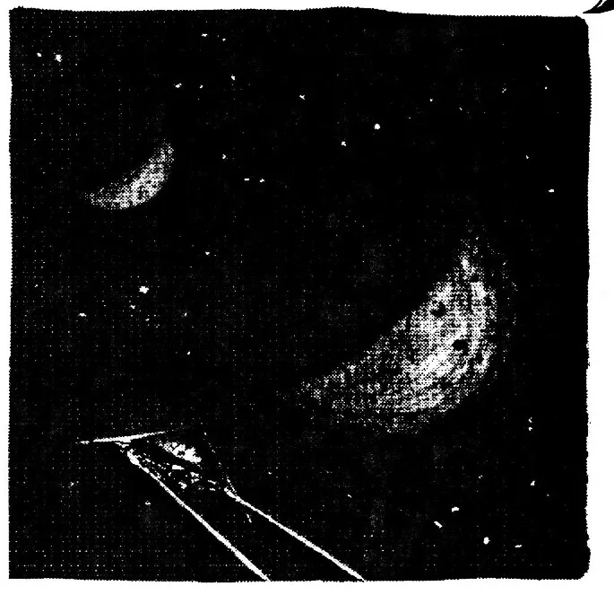
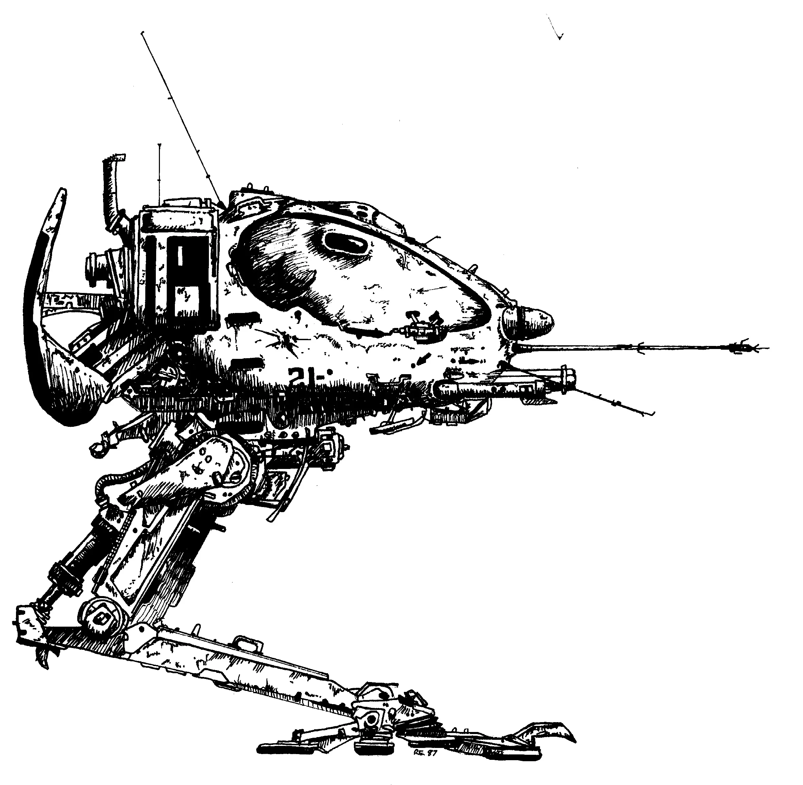

Introduction
The preceding chapters dealt with the rules and rule systems that are inherent to Genesis, but there is much more to the game than just rules. In fact the major aspect of role-playing games (RPGs) that sets them apart from other games has nothing to do with rules, it has to do with the adventures. Regular games are fixed -- they have one adventure that you play over and over every time you play the game, just the opposite is true for RPGs. They have adventures, only plot and storyline, that are infinitely variable because they are separate from the rules. So, every time an adventure is purchased or one written the adventure the players experience changes.
What is an Adventure?
The best explanation to that question is that an adventure is just like a novel or a movie -- where you tell the player's what they hear, see, feel, etc. -- with one major exception, the story-line can be changed. Depending on what decisions and actions the players make during the game the course of the adventure is changed and you read them different descriptions of what's happening. A simple example can be found in imagining the players are walking through a lightly wooded area, you tell them "You have come to a fork in the path" -- they are faced with a decision. You tell them, "On the path to the right you can see the lost city you have been searching for, while the one to the left has a washed out bridge over a huge pit." The choice is simple -- they would take the path to the right because it takes them to their goal, while the other path will put them in great danger. This is an extreme example because the choices are black and white and the decision is clear. So they choose the path to the right and you read them the descriptions about their journey to the lost city and of the riches they find inside. What they don't hear is the descriptions of the washed out bridge over the huge pit. So the rest of story changes every time the players make a decision. This is what an adventure is -- an interactive novel or movie -- where the player's decisions affect the story-line.
Running Adventures
Since the story-line changes every time the players make decisions there has to be someone to read them the appropriate descriptions and omit the ones describing the untraveled roads. So the Game Master (Game Master) was invented and his job is to master the game and run the adventure. The Game Master is the one who interprets the players' actions and relates the results of their actions, so the players know what effects they are having on their imaginary universe. The ideal Game Master will be able to do this simultaneously and without seams so the flow of the gaming universe will be perfectly smooth. There are, however, very few Game Masters that can perform these tasks without having years of practice. Even the best ones have their off days and will tell you they began their Game Mastering as slow and slightly incompetent -- so do your best and practice. Soon you'll get better and you can forget about being a good Game Master and start having fun in an adventure just as the players do! So the basics of a Game Masters job, running an adventures, are; telling the players where they are, what they hear, smell, taste, see etc.; asking about their actions and using the rules to figure out the results; and finally using Non-Player Characters to react and give the world life.
Setting the scene -- being a Storyteller
Tell the players where they are, what the see, smell, taste, hear etc. Setting the stage, as it were, is very important when the players first come into the universe and then again every time they venture into something new. Description of settings are also very important after the characters have gone through a confusing experience -- like reviving from unconsciousness -- falling several floors through a garbage shoot or a similarly disorienting incidents. Part of setting the scene involves describing the characters surroundings well and most of that relies on the senses. Whenever you find yourself at a loss for description -- relate to the players senses. Especially if what they have to smell produces a particularly powerful stench, or the sight of the two suns, blazing red, sinking into the sea is captivating. Our sight provides us about eighty percent of all our sensory input, so it's no wonder that most descriptions are of the visual variety. The other three sense are very important, however, you should not make the mistake and dismiss them as unimportant. These types of description are best done when the subject is quite shocking or startling and will form a lasting impression. Descriptions to the senses provide background information to the player to give them a sense of the world around them that so they can act. It is your job, as a Game Master, to interpret these actions.
Interpreting action -- being a Game Master
The players have an idea of what the world is like around them, they have taken this in, thought it over, and decided -- either within themselves or as a group -- what to do. The player may ask questions about some of the descriptions you have given them or ask for additional information on a particular subject. For example..."Is there a second floor in this bar does it have a mezzanine floor?" or "Is the blue Aracnian bartender our contact." They might make statements about who they want to find, or where they want to go. "I'll go upstairs and cover the lower floor just in case anything happens" or "I'll approach the bar and order a drink." -- it's up to them. Translating these questions and statements into actions is your main job. Whatever they say that they are doing, you provide information about their changing world. For the character that goes upstairs "you walk up the wooden staircase and look for the best point to stake-out the whole bar." Running updates on what is happening keeps the players informed about the world around them -- so they can continue to act effectively. When the players are faced with a particular problem to solve then you take the necessary information -- do the necessary calculations and get the results. It's your job again to tell the player the results, in a game sense, by role playing.
A Living World -- being a Role Player
Making the world come alive is easy if you remember two things, always use Non-Player Characters (NPCs) to react to the characters actions and never tell the players anything, describe it to them as if they are their characters. Non-player characters, controlled by the Game Master, react to the characters' actions and give them immediate feedback. So, whenever you tell the players anything, tell them as a character in the game. Rather than telling them "your character failed the skill check" you would say "the alarms go off the guards turn and spot you, they start yelling and running towards you!!" This puts the players immediately into the action, as their characters, and not out here in a safe reality -- the whole point of playing a game.

A Good Game Master
You have the original example of how the players were on a path and they had to choose which fork they would take but the example was simple because the choices were clear. Now imagine the same path again but this time they cannot make out any differences in either path. One path might be a short route to their objective and the other might hold great danger, but there no way of telling which one is the shortcut. Again they make a choice and start down that path, not knowing what awaits them, or what they have missed by not taking the other path. This is again an extreme example, because both paths look equal, neither is clearly the path to the objective. The secret to being a good Game Master is to find a fine balance between these two extremes. The important thing to realize is that this balance will change from group to group and even within a group over time. This point should be where the choices are very close and the player will have to really think to go in the right direction, yet this right choice is almost the only option. To achieve this without letting the players know that they are being manipulated, and still giving them an enjoyable gaming experience is the ultimate satisfaction for a Game Master. This goal is achievable if you abide by four simple rules.
- Don't get bogged down -- The rules are only there to help the gaming experience. If a rule gets in your way and you can't use another one in its place forget it! We definitely didn't design the rules in Genesis to ruin your gaming experience. We could not envision every situation that could occur when we created the systems. So, whenever you feel the action is dragging or you see the players aren't having fun guesstimate the modifiers, the results, or even ignore the rule entirely. It's up to you and your players to decide. What ever combinations of the rules that fits your particular gaming style is the combination that you should use.
- Be fair and consistent -- Whenever a judgement call has to be made -- make it, after all you're the one who has the right, then stick to it. If objects fall up in a particular place then there had better be a good reason why they do, and they should always fall up there. Players will become very cynical and apprehensive about a game and a Game Master if they believe he's playing favorites.
- Never want the players to do anything -- If you want them to solve a problem in a certain way then you will be disappointed when they don't. This can make you bias and you could penalize them unfairly. The best thing to do is give them several options all with their own good and bad points. Then no matter how they try to overcome the hurdle they will encounter problems that they will have to deal with -- which makes it fun and exciting. Even if they think up their own way to traverse the obstacle or solution to the problem don't meekly let them succeed. The solutions you created had problems and so should theirs -- even if they are just perceived problems.
- Be flexible -- Whenever the players do something different than what you have planned, AD LIB. Just ask yourself the question, why not? By letting them do this am I going to screw up anything later on in the module. If the answer in "No" them let them go -- and make up the descriptions as they need. If the answer is "Yes" then think of a way around it and let them go for it! If you can't think of any way to bypass the conflict then think up a reasonable answer for the players. Nothing stone-walls players and kills enthusiasm like a flat out "NO!". So when then want to do something different, let them -- after all you have more control over the world than they do! If you follow these the rules and practice being a Game Master without being afraid of fouling things up then you'll be on your way to becoming a good one. Continue, always trying to give all of your players good gaming experience, and in a very short time you will be among the best.
Details
Most Science fiction games can be grouped into one of three general types, based on how much the game tries to simulate reality, these are soft core, Hard Core and other. Each game in these groups have characteristics of genre and rule systems that give a particular feeling to the game. Soft-core, typically Space Operas, try not to model reality very closely. This type of game has light and uncomplicated rule systems, which bring across the basics but never really gets into the details. Hard Core games, however, stick more closely to reality and scientific fact and their logical extensions. To simulate reality these games usually have long and complex rule systems which cover every possibility. Other games typically the posses characteristics of both soft core and hard core games. They maintain a level of scientific fact but add in things which are of a fantastic nature. Genesis belongs in none of these categories, because unlike other games Genesis does not have one set of rules. The rules of can be chosen to suit the kind of game that you and your players feel comfortable with. So, if you want a Space Opera then choose those rules which try not to model reality. If you want a Hard Core science-fiction game, choose rules that include all of the modifiers possible. And if you want a game with a good mix of both use or ignore any of the rules that you want. All of the alternative rules in Genesis have been designed so that they all function to provide a seamless gaming environment.
A Living World
Whenever possible appeal to the senses of the players tell then what the feel, smell, see etc. This will bring them into the world. Maintain the atmosphere of the world by using the character's name to relate information and soon you will find the players refer to each other by their characters names as well, this brings the world closer and makes it more realistic. Nothing kills atmosphere more than "Ok, you and ... (to player) what's your name?... Doug, oh yeah!, You and Doug..." so try keep the players in character, this is a good lesson for the Game Master as well. Playing roles yourself will also bring home aspects of the world that the players need to journey in their imagination. How well you play the NPCs that are needed in your adventure may be the difference between fully getting into the world and any other board game you might play.
Preparing to Play
You'll need an adventure, 2 friends or more, and something to eat and drink -- RPGs are social games. A playing session can be as short as 1 hour and games often stretch to 4 hours -- sometimes even longer, with the average game lasting about 2 - 3 hours. Adventures can either be purchased or written by you (See Generating Adventures). You should already have read a pre-written adventure so there's a minimal amount of fumbling involved during play. So you know the major points, and the critical elements of the adventure -- to guide the players through skillfully. The adventure and some ten-sided dice, and some pencils are a necessity while some paper and maybe a calculator will probably be a good idea. The players have to make up characters to portray in the Genesis universe (See Character Generation). Once they have done this and have chosen weapons and equipment, then you can begin the adventure.
Adventure Flow
The Lead-in
To begin, read or describe the basics of the adventure, facts like the setting the players find themselves in what they are doing and the lead-in to the action of the adventure. This information gives the player the feel of the world they are in. If the players begin together it's usually assumed that they would know each other's character names, and it's a good idea that they do. To start any adventure you must start at a point, a place where the players pick-up the story-line and join in the game. Choosing this point can be very difficult, so novice Game Masters should probably use pre-written store bought adventures until they have had a chance to become familiar with the rules.
The Typical Start
The typical start to an adventure has the player introduce themselves and their characters then the Game Master begins reading the background story to the adventure. This is a solid place to start an adventure because the players all know why their there and what some of the basic facts are -- this is also a very standard lead-in to an adventure. This method can leave the players standing in a world full of tantalizing options with no clear one to pursue.
In Media Res
An exciting place to start an adventure is right in the middle of the action or -- In Media Res -- from the Latin. It is a good way because the players have an immediate problem to solve. The choices will be clear, someone shooting at you helps you to clear your mind, form then it doesn't take much to figure out which way to run. This gives the players and immediate direction in the adventure, and they won't be worried about their eventual destination or the path they will take to get there. Also this get them into the action without boring introductions and slow build- ups to the action. So In Media Res can be an exciting place to start especially if the players are inexperienced. They can be guided by an NPC out of the line of fire and proceed from there. Please experiment with different introductions and beginnings for your adventures.
Rising action
It may take a while for the players to get going so In Media Res is again a good way to start an adventure but other methods to get the ball rolling will also work. Once on their way, however, they will probably carry on along the path of the module. The little challenges that they must overcome continually set them up for the next leg of the journey to their objective. These little hurdles also prepares them for the gradually increasing demands as the approach the climax.
Keeping the Action Alive
Sometimes the players will get stuck and hold up the action. If you feel the actions is dragging, then you've probably presented the group with to many options, so take a few away. Have the computer sound a warning, one of the tunnels collapses, the guard spots them and sounds the alarm, anything to get them going. This will give them direction, albeit a run for cover, and get them back into the action. They might need some more information, your problem may be to complex, so give them a hint. If some of the players obviously aren't with the rest of the group, then bring them back with something to interest them. If she is the cerebral player them give her something to think about, if he likes combat throw a fireball his head, any thing to spark interest and to get indifferent players back into the game.
The Conclusion
The players will have been through some rough time to get to this point in, but that the point, so don't just give them the trophy. Make them work for it with everything they have left and make it difficult. If they use their heads, however, by working through the problem and they pick the logical course of action then they should succeed. They should be rewarded for their efforts. Rewards to the characters for their accomplishments vary wildly by adventure, but the usual is wealth and experience. The players, however, is the satisfaction of seeing their characters growing and advancing, and the pleasure that comes from success and accomplishment.
Generating Adventures
After running a few adventures you will have become more accustomed to the rules and how they function you can concentrate less on them and how to use them correctly and begin to pay more attention to the story and build up of the adventure's plot. When you reach stage you may wish to generate your own adventures -- this section will give you some guidelines for doing just that. Store bought adventures are better for newer inexperienced Game Masters because they are well laid out and contain detailed information that will allow even a first-time Game Master to give the players a good and exciting experience. In addition to the detailed descriptions a published adventure has several main elements including theme, plot, the general setting. All of this must be thought out and laid down by you if you wish to write a module.
Themes and thesis statements
The whole basis of a module comes from a single idea, a theme. Usually, it expressed as one general sentence called a thesis, a theme can be anything, encompass a galactic scope, and affect millions. Or it can be one specific thing, about one person, and only touch that one life, it all depends on you. Your choice of theme will determine all of these factors and every time you do it will seem almost effortless. A large amount of control to have in just one sentence! The next few sentences are examples of thesis sentences. Cut-throat mining in the Milmoth debris fields pushes the miners, their machines, and their equipment beyond safety limits everyday. The journey that every Fenbin makes in the spring of their 12 earth year cycle is fueled by political, social, and physical forces they cannot control. Organized crime grasps at the very heart of a society and wreaks havoc politically, socially, and economically. These three themes were the basis for the stories "Between The Rocks", "The Coming Dawn", and "The Rising Sun". Their general themes are commercial exploitation, racial differences, and organized crime syndicates. This general statement conjures-up various supporting statements in the form of examples where the theme exists. These examples are what an adventure is built around.
Plot
The individual examples where the theme is visible are then taken as little steps in the whole theme that you want to convey. In "The Rising Sun" for instance the theme is organized crime syndicates so an example where this appears could be the premise that is used in the first module - The Andromedian Rose. In this adventure the crime boss is selling weapons to the Minarians and the pirates for a war that will end if the Minarians are allowed into the Alliance. So to ensure that they are not allowed entry the Boss kidnaps the princess. This will stop the wedding and keep the two largest hoses on Minarus from joining - thereby preventing their induction into the Foundation! Sound complicated well it will be at first but you'll get the hang of it, after all these modules was written by people with much more experience than you.
Little Accomplishments
This overall theme can the be broken down into sub-parts. This helps the Game Master keep control it all and also lays out the action step by step for the characters. As they proceed through the adventure they overcome these 5 little steps one by one. Each leads them to the next which leads them to the next and so on until the reach the final plateau, the height of the action. When they surmount this last test they have accomplished their goal and so reap the benefits. In the first module the little steps are clear the players are wrongly accused of the kidnapping and as flee the authorities. The first step would be to elude the police, MASS, MFC, and the King's guard. Then to find out who is actually responsible for the kidnapping. Since the police probably wouldn't listen they will then be forced to rescue the princes themselves. Finally get her back in time for the wedding. Each of these steps has a purpose and a task that must be completed. They can then be broken down into the individual tasks like a bribery skill check to see if the bar patron will tell you who and where the Boss is. When the players complete these small steps towards the goal, either through successful or unsuccessful skill and attributes checks, they are one step closer to their goal.
Two Methods
Writing an adventure can take an afternoon or several weeks depending on the complexity and length of the finished product. If the module will take two hours to play then the amount of effort you expend will be considerably less than writing up a campaign that will take months to fully explore. Where a campaign is several independent adventures all linked by a consistent theme. There is no real yardstick you can use as your guide, other than experience - which always comes with time, so just give it a try. There are two basic methods that work well when generating modules, free-style and the formula approach.
Free-style
Using this method is much more serendipitous than the formula approach, and as such it requires a bit of experience for it to produces good adventures. This method often produces many ideas and often very good adventures but it is very free and unconfined. This is its good and bad aspect because there are many places where inexperienced Game Masters can go astray, but all the freedom experienced Game Master need when writing an adventure. Essentially the Game Master sits down and begins at an idea similar to the theme. From there it becomes a search for the premise upon which the adventure will be built. This has to take into the account the basis, the participants, their conflict, the resolution and the conclusion. Then the little steps between the beginning and the conclusion can be thought out. Including how the players come in and what their goal is. Finally all the descriptions of the various settings and back- drops that the story will unfold in front of has to be written.
The Formula Approach
To use this method is akin to putting together the pieces of a puzzle, the process takes some time but all the pieces eventually fit together to make a finished picture. The first thing to do is look through all the pieces, which in the adventure making puzzle are the lure, the motivation, the disclosure, and the conclusion. These four elements are the essential pieces necessary to any module. Once you have thought out the theme and has the basics of plot then you are ready to begin.
The Lure
The lure gets the players in to the action in an unobtrusive way. It gets the players interested and makes them want to go with the module. The typical example is a plea from innocent people for the players to help them. In "The A. Rose" the girl that runs on the ship, pursued by two ruffians, makes a plea for help. This type of lure is typical and common, but others are equally good. The promise of fame, and fortune often works, and when a thief steals your dit disk and you give chase you could also be running into an adventure. There are to many to count and new ones being invented everyday, but they all perform the same function -- they get the characters into the module and peak the interest of the players.
The Motivation
The motivation, keeps the players going in the right direction. Many time this can be the same as the lure, especially wealth and riches. Often though the motivation is changes when the players get into the adventure. In "The A. Rose" the players have no idea they will end up being charged with kidnapping when the girl runs onto the ship, but this will actually be the driving force to continue in the module.
The Disclosure
Disclosure, by definition is the insight or inspiration that comes all at once. Every module has information that the characters and their players don't find out until the end. When the players speak to the Princess and she tells them of her world and how they are fighting a war against the pirates with the help of the weapons and equipment supplied by the Boos and they know he supplying the pirates the characters experience Epiphany. All at once the motivation for the Boss to kidnap the Princess and prevent the wedding becomes clear, and this is epiphany.
The Conclusion
The conclusion, is simply the direction the players proceed to finish the adventure and complete their objective. The players in "The A. Rose" escape the Boss henchmen high-tail-it down the tunnel. Then with the help of the hermit get the Princess back for the wedding, and clear themselves of charges. These four concepts extended from an exciting and interesting theme are the essential elements of any good adventure. Whether you use the freestyle or formula method, writing a module takes quite a bit of effort and inspiration, which most people can muster.
